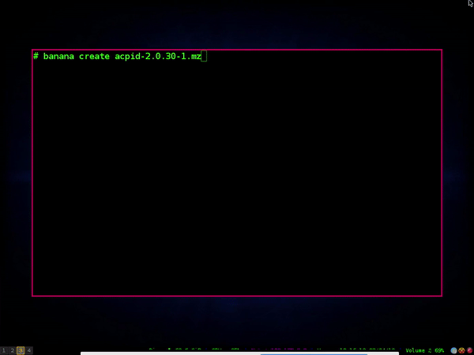

<!DOCTYPE html>
<html lang="pt-br">
<head>
	<title>BananaPKG - Simples Gerenciador de pacotes de baixo nível</title>
	<meta charset="utf-8">
	<style>
		body{font-size: 1.2em; color: #232323;font-family: courier new; margin-left: 4%; margin-right: 4%;}
                #principalcon{margin: 1em auto;max-width: 55em}
		hr{border: 1px dashed; color: #333; margin-top: 4%; margin-bottom: 4%;}
		h3{margin-top: 3%; margin-bottom: 3%;}
		img{margin-left: 19%;}
		li#categoria{margin: 0.5%;}
                .sub{color: #FF3C12;}
		#code{background-color: #b8b8b8; padding: 1%; color: #232323;}
		.titulo{color: #007e4d; background-color: #E1E1E1; padding: 0.5%;}
                #nota
                {
                 background-color: #292929;
                 color: #00FFB2;
                 padding: 1%; 
                 margin-top: 2%; margin-bottom: 2%; 
                 box-shadow: 1px 10px 10px 0.2px #C6C6C6;
                }
                #nota li{color: white; margin: 1%;}
                #parametros{color: #900C3F;}
                #voltar{font-size: 1.1em; text-align: center;}
	</style>
</head>
<body>
<div id='principalcon'>
<b>Atualização: 10/04/2019</b>

<h2>Documentação</h2>

<p>
Está documentação tem como intuito ajudar os usuários do banana!
Se você possui alguma sugestão para incrementar nesta documentação entre em contato.
</p>

<hr>

<h3>Índice</h3>
<ol id="principal">
	<li id="categoria"><b>Prefácio</b></li>
		<ul>
	            <li><a href="#bananapkgprojeto">O projeto BananaPKG</a></li>
		    <li><a href="#inspirado">BananaPKG é fork de qual gerenciador?</a></li>
		    <li><a href="#linguagem-bananapkg">Em qual linguagem é escrito o BananaPKG</a></li>
	            <li><a href="#bananapkg-alto-nivel">BananaPKG é de alto nível?</a></li>
		    <li><a href="#formato-pacote">Qual o formato do pacote?</a></li>
		    <li><a href="#passar-amigos">Posso passar os pacotes que criei para amigos?</a></li>
		</ul>
		
		<br>
		
	<li id="categoria" href='#modo-de-utilizacao'><b>Modo de Utilização</b></li>
		<ul>
		    <li><a href="#criar-pacote">Como criar um pacote</a></li>
                <ul>
                     <li><a href="#scripts">Scripts do diretório info/</a></li>
                     <li><a href="#assinatura">Assinatura GPG/</a></li>
                </ul>
		     <li><a href="#instalar-atualizar-pacote">Como instalar/atualizar um pacote</a></li>
		     <li><a href="#remover-pacote">Como remover um pacote</a></li>
		     <li><a href="#procurar-pacote">Como procurar um pacote</a></li>
		</ul>
		
		<br>
		
	<li id="categoria" href='#'><b>Desenvolvimento</b></li>
                <ul>
		     <li><a href="#listdescremove">/var/lib/banana/{list,desc,remove}</a></li>
		     <li><a href="#etcbanana">Arquivo de configuração em /etc/banana</a></li>
		     <li><a href="#coresh">core.sh</a></li>
		     <li><a href="#helpsh">help.sh</a></li>
                </ul>
       <br>
       
	<li id="categoria" href='#compilacao'><b>Compilação um caminho correto</b></li>
                <ul>
		     <li><a href="#compilacao">Quais parâmetros devo usar na compilação?</a></li>
		     <li><a href="#enfeites">Enfeites do pacote</a></li>
		     <li><a href="#strip">Strip Now</a></li>
                </ul>
       <br>
                
	<li id="categoria" href='#diferencial'><b>Segurança</b></li>
                <ul>
		     <li><a href="#diferencial">O diferencial</a></li>
                </ul>
</ol>

<hr>

<!--
#####################################
O PROJETO
#####################################
-->

<pre>                                                      
    O Inicio                                                    
+--------------+                                              
| <b>Programa     |                                              
| Compilado</b>    |          +-------------+                     
+--------------+          | <b>Copiar Docs</b> |-----------+         
      |                   +--+----------+           |         
      |                      |            +----------------+  
      |                      |            | <b>Zippar Manuais</b> |  
      |                      |            +----+-----------+  
      +--- -----+        +-----------+         |              
      |<b>Fake Root</b>|--------| <b>Diretório</b> |         |              
      +---------+        | <b>Info/</b>     |    +------------+      
                         +-----------+    | <b>Enfeites</b>   |      
                                          +------------+      
                         +------------+        |              
                         |<b>Gerar Pacote</b>|--------+              
                         +------------+                       
          +---+               |                               
          |<b>Fim</b>|---------------+                               
          +---+
</pre>

<h3 id="bananapkgprojeto" class="titulo">O projeto BananaPKG</h3>
O bananaPKG foi iniciado com suas ferramentas de baixo nível indenpendentes. Porém na versão 1.5, passou a ser uma ferramenta única que tem suas chamadas (create, install, upgrade, remove, search)</b><br><br>
<br>
Você pode conferir a sintaxe no indice: <a href="#modo-de-utilizacao">Modo de utilização</a>


<h3 id="inspirado" class="titulo">BananaPKG é fork de qual gerenciador?</h3>
Nenhum. O bananaPKG foi <i>criado do zero</i>, porém teve inspiração nos utilitários <b>installpkg</b>, <b>upgradepkg</b>, <b>removepkg</b> da distribuição Slackware que também é escrito do zero e em Shell Script.


<h3 id="linguagem-bananapkg" class="titulo">Em qual linguagem é escrito o BananaPKG</h3>
O BananaPKG foi criado na linguagem de programação Shell Bash. Feito para ser simples, fácil e agradável de se utilizar... Em poucos passos você já pode criar os seus pacotes e passar para seus amigos.


<h3 id="bananapkg-alto-nivel" class="titulo">BananaPKG é de alto nível?</h3>

<p>
Não! BananaPKG é uma ferramenta de baixo nível, com ela você pode <b>Criar</b>, <b>Instalar</b>, <b>Atualizar</b>, <b>Remover</b> e <b>procurar</b> pacotes do seu sistema.
</p>

<p>
Ou seja, ela serve para gerenciar os pacotes e cuida-los. Se caso você seja um bom programador de Shell e queira fazer uma extensão de alto nível que resolva dependências, há uma array/lista no arquivo info/desc que contém as dependências do pacote.
</p>

<p>
Essa array foi criada e pensada para um uso futuro para quem deseja fazer uma extensão. Por padrão o projeto não terá oficialmente uma extensão para esta finalidade.
</p>

<h3 id="formato-pacote" class="titulo">Qual o formato do pacote?</h3>

<p>
O formato de pacote próprio é o <b>.mz</b>. Como inicialmente o BananaPKG foi criado para suprir a necessidade da distribuição Linux mazonOS, que é uma distribuição criada do zero e não possuia um gerenciador de pacotes, acabou que o formato ficou e vai continuar como .mz.
</p>

<p>
Este formato é um simples arquivo compactado com o utilitário tar e comprimido com o utilitário xz. 
Mas sinta-se a vontade para modificar ao seu gosto a extensão se assim necessitar...
</p>

<p>
O programa está bem modularizado e um bom programador em Shell consegue fazer a modificação para sua necessidade.
</p>

<h3 id="passar-amigos" class="titulo">Posso passar os pacotes que criei para amigos?</h3>

<p>
Com toda certeza. Mas para quem ser o receptor do pacote vai precisar utilizar o BananaPKG também. Isso devido ao fato que o pacote que ele gera depende do instalador para tratar o pacote antes de instalar.
</p>

<p>
Ou seja toda a estrutura é própria!
</p>


<hr>


<!--
#####################################
MODO DE UTILIZAÇÃO
#####################################
-->


<h2 id="modo-de-utilizacao">Modo de utilização</h2>

<pre>Parâmetos Resumidos:

<b>-V</b>, <b>version</b>
	Exibe a versão do banana

<b>-h</b>, <b>help</b>
	Exibe ajuda e sai

<b>-c</b>, <b>create</b>
	Cria um pacote

<b>-r</b>, <b>remove</b>
	Remove um pacote

<b>-y</b>
	Está opção é aliada ao parâmetro -r, remove. Ela serve para auto confirmar a remoção do pacote	
	você pode declarar em /etc/banana/banana.conf a variável AUTO_YES para auto remover,
	sem ter que passar este parâmetro. Você pode utilizar -y antes ou depois do argumento (pacote).
	Exemplo:
	banana remove -y leafpad OU banana remove leafpad -y

<b>-i</b>, <b>install</b>
	Instala um pacote

<b>-u</b>, <b>upgrade</b>
	Atualiza um pacote

<b>update</b>
    Opção para Atualizar o Bananapkg via Internet.

<b>-s</b>, <b>search</b>
	Procura um pacote no sistema localmente, está opção é válida somente para pacotes que foram
	criados e instalados com o banana.

<b>-ol</b>, <b>one-line</b>
	Está opção é aliada ao parâmetro -s, search. Ativando está opção a saída na tela fica em
	somente em uma linha <b>programa-versão-build</b>.

<b>-v</b>, <b>verbose</b>
	Modo verboso, em algumas partes do programa.

<b>-pl</b>, <b>print</b>
    Imprimi lista do pacote instalado localmente.
    Está lista contém toda a hierarquia do pacote, aonde foram instalados.
    Puxado de /var/lib/banana/

<b>Para maiores informações sobre cada parâmetro leia abaixo.</b>
</pre>


<!--
#####################################
CRIAR UM PACOTE
#####################################
-->

<h3 id="criar-pacote" class="titulo">Como criar um pacote</h3>
<b>USO:</b> banana [create] [nome_do_pacote-versão-build.mz<br><br>

<div id="code">
<b>-c</b>, <b>create</b> <b id="parametros">Criação de pacote(s)</b><br>
</div>

<p>
Para ingressar nesta jornada de empacotador, você ira necessitar entender o conceito básico do Fakeroot. Mas o que é Fakeroot?
</p>

<b class='sub'>Fakeroot</b>

<p>
Fakeroot significa Raiz Falsa, para entendermos o conceito precisamos saber como é instalado um programa por de trás dos panos.
</p>

<p>
Ao grosso modo ao instalar um programa ele possui toda a estrutura dos diretórios, como usr/ etc/... Está estrutura é solta na raiz <b>/</b> do sistema, logo podemos saber que a instalação será feita.
</p>

<p>
Isso se tratando de softwares convencionais, os opcionais como Firefox/Telegram etc... Normalmente ficam em um diretório a parte em opt/ e normalmente já são pré-compilados.
</p>

<p>
Quando compilamos e fizemos um make install é feito o passo que falamos acima, é solto basicamente toda a estrutura do programa pré compilado na raiz <b>/</b>.
</p>

<p>
É ai que entra o fakeroot, vamos enganar o sistema dizendo um diretório especifico ao invés de instalar na raiz.
Este diretório falso é essencial, pois podemos manipular todo o programa pre-compilado antes da instalação.
</p>

<p>
Assim fizemos os nossos enfeites que vamos abordar mais adiante.
</p>

<p>
Para um exemplo, supondo que rodei toda a base ./configure && make e ao invés de por make install somente botaria em <b>make install DESTDIR=/Um/Diretorio</b>
</p>

<p>
Voltando... Você irá necessitar seguir um passo a passo para ter êxito. O primeiro passo é criar um diretório chamado <b>info/</b> e um arquivo dentro do diretório chamado <b>desc</b>.
</p>

<p>
Esse arquivo <b>desc</b> é de muita importância para o pacote. É atráves dele que toda conferência do pacote é feita nos outros utilitários.
</p>

<p>
Você pode criar manualmente ou automaticamente com a opção <b>-g</b>, <b>generate</b>. Está opção irá criar o diretório info/ e o arquivo desc pronto para edição.
</p>

<p>
Você poderá passar no mesmo parâmetro do <b>-g</b>, <b>generate</b> o nome-versão-build do pacote! Assim fica mais fácil para o preencimento do resto das informações posteriormente.
Lembre-se de sempre seguir o padrão: <b>firefox_quantum-55.0.1_2-1</b>
</p>

<h2>Exemplo</h2>
<div id="code">
banana -g firefox_quantum-55.0.1_2-1<br>
<br>
banana generate qt5-5.2-1<br>
<br>
banana -g sublime_text-3.9.2-1<br>
</div>


<div id="nota">
    <b>Nota!</b>
    <p>
    Não se preocupe se você ter vários arquivos dentro de info/ como rm.sh e pos.sh.
    Eles não serão sobreescritos se você executar o banana -g, generate.
    </p>
    
    <p>
    O único arquivo que é gerado é o desc, tome cuidado para não sobreescrever o mesmo se já estiver preenchido.
    Se não você terá que preencher tudo novamente.
    </p>
</div>

<p>
O arquivo desc tem um série de variáveis que precisam ser editadas, sendo que todas <b>menos</b> a array/lista <b>dep</b> precisa ser preenchida, ás variáveis são:
</p>

<h2>Exemplo</h2>
<div id="code">
# Nome do mantenedor do pacote<br/>
<b>maintainer</b>=''<br/>
<br/>
# Nome do pacote<br/>
<b>pkgname</b>=''<br/>
<br/>
# Versão do Software<br/>
<b>version</b>=''<br/>
<br/>
# Versão de construção do pacote (build)<br/>
<b>build</b>=''<br/>
<br/>
# Licença<br>
<b>license</b>=''<br/>
<br/>
# SMALL Description of Software, NO Trespassing |<br/>
#=============RULER=====================================================|<br/>
<b>desc</b>=" "<br/>
#=======================================================================|<br/>
<br/>
# URL SOFTWARE<br/>
<b>url</b>=''<br/>
<br/>
# What packages do your package need to run?<br/>
# This array is optional.<br/>
<b>dep</b>=(" ")<br/>
</div>


<p>
Preencha todas as variáveis em letras minúsculas, lembre-se de por no campo <b>pkgname</b> o nome correto do programa e no campo <b>version</b> a versão correta do programa. 
</p>

<p>
Todos estes campos são usados não só para imprimir na tela para o usuário, mas também para conferencias importantes :) Decifrando os campos:
</p>

<p><b class='sub'>maintainer</b><br/>
Este campo necessita ter o nome do mantenedor do pacote seguido do seu email, o ideal é ser neste e somente neste formato:
Jefferson Rocha <email@email.com></p>

<p><b class='sub'>pkgname</b><br>
Este campo você necessita preencher com o nome do pacote, este campo é conferindo na hora que você cria o pacote, necessita estar igual ao que você vai chamar na linha de comando.</p>

<p><b class='sub'>version</b><br>
Campo de versão do programa, este campo é conferido na hora da criação do pacote, necessita estar igual ao que você vai criar.</p>

<p><b class='sub'>build</b><br>
Este campo é o de construção númerico! Cada vez que você mexer e gerar um novo pacote com o mesmo pacote você precisa incrementar este campo!
Ele é conferido na hora da atualização do pacote juntamente com a versão. Então é um campo muito importante também!<br>
Lembre-se de usar somente números inteiros como (1, 2, 3, 4) etc... e não números quebrados como (0.1, 0.2, 0.3). Números quebrados não serão aceitos.</p>

<p><b class='sub'>license</b><br>
Neste campo você deve preencher com a licença do software. <b>DIFICILMENTE</b> terá um software sem licença. Pesquise antes de anexar a este campo... É muito importante.
</p>
<p>
Mas como devo anexar a licença? Use sempre abreviações, Por exemplo:
<pre>
MIT               = <b>MIT</b>
GNU GPL Versão 2  = <b>GPL2</b>
GNU GPL Versão 3  = <b>GPL3</b>
GNU GPL Versão 2+ = <b>GPL2+</b>
</pre>

Siga sempre está lógica.

</p>


<p><b class='sub'>desc</b><br>
Neste campo você precisa ter um pouco de mais cuidado, ele é o campo de descrição do programa. Você necessita seguir a régua que tem em cima do campo e não deverá ultrapassar o pipe '|', caso sua descrição seja muito longa vá fazendo a quebra de linha antes do pipe '|'.
Exemplo:<br></p>
<pre>
#=============RULER=====================================================<b>|</b>
<b>desc</b>="Esta descrição é um exemplo prático de como fazer a descrição você
pode ver que eu necessitei quebrar a linha para baixo, mas isso não é um
problema.
É simples, antes do pipe eu quebro para baixo e continuo com a descrição
normalmente ;)
Lembre-se de usar aspas duplas neste campo, pois se você usar aspas sim-
ples tipo Don't não terá poblemas."
#=======================================================================<b>|</b>
</pre>


<p><b class='sub'>url</b><br>
Qual o site do projeto do software que você está empacotando? Adicione aqui!</p>

<p><b class='sub'>dep</b><br>
Se caso o programa que você gerou o pacote necessitar de dependências <strike>o que é quase certeza</strike>, você precisa por neste campo. Ele nada mais é que um array, digamos que o meu pacote imaginário tenha 3 dependências (X, Y, Z), fariamos:</p>
<pre>
<b>dep</b>=("X" "Y" "Z")
</pre>


<h3 id="scripts" class="titulo">Scripts do diretório info/</h3>

Após você ter preenchido todo o arquivo <b>desc</b> você talvez necessite fazer alguns incrementos no seu pacote. Alguns software necessitam fazer uma série de passo a passo para atingir o seu objetivo, dentre estes objetivos: Adicionar links simbólicos, adicionar grupo, usuários etc...<br>
É o caso por exemplo do programa rsync que exige que antes de instalar o mesmo tenha o grupo <b>rsyncd</b> e o usuário <b>rsyncd</b>. Para isto existem três scripts RECONHECIVEIS pelo bananapkg: <b>pre.sh</b> <b>pos.sh</b> <b>rm.sh</b>. Com estes scripts você pode fazer ainda mais a manipulação do seu pacote.

<p><b class="sub">pre.sh</b><br>
<p>Este script é manipulado pelo <b>banana install</b> e é executado na pré instalação do pacote, ou seja antes do pacote ser instalado. Toda rotina que você precisa antes do software estar instalado você poderá adicionar neste script! Como um exemplo vamos criar um usuário e grupo:</p>


<h2>Exemplo</h2>
<div id="code">
cat > "pre.sh" << 'EOF'<br>
# Adicionando grupo ao rsyncd<br>
groupadd -g 48 rsyncd<br>
<br>
# Adicionando usuário<br>
useradd -c "rsyncd Daemon" -d /home/rsync -g rsyncd -s /bin/false -u 48 rsyncd<br>
EOF
</div>

<p><b class="sub">pos.sh</b><br>
<p>
Este script também é manipulado pelo utilitário <b>banana install</b> e é executado na pós instalação do pacote, tudo que você necessitar fazer na pós instalação é crucial por neste script.
</p>

<p>
Supondo que eu precisasse na pós-instalação do pacote criar um link simbólico para o firefox em /usr/bin, devemos criar um script <b>pre.sh</b> e adicionar informações lá dentro! Lembrando que deve ser dentro do diretório <b>info/</b>. Uma rotina clássica:
</p>

<h2>Exemplo</h2>
<div id="code">
cat > "pos.sh" << 'EOF'
<br>
# Script para criar link simbólico do firefox para firefox-quantum<br>
ln -sf /usr/bin/firefox /usr/bin/firefox-quantum<br>
EOF
</div>

<p><b class="sub">rm.sh</b><br>
<p>
O script rm.sh é executado na remoção do pacote e utilizado pelo utilitário burnpkg. <b>Este script é essencial</b> para uma limpeza mais profunda que o pacote deixou. Se você adicionou algumas rotinas no <b>pre.sh</b>/<b>pos.sh</b> de <u>criações</u>.
</p>

<p>
Você precisa reverter tudo neste script. Afinal não queremos deixar sujeira na máquina do destinátario não é?
</p>

<p>
Vamos a um exemplo clássico, adicionamos logo acima no script pre.sh e pos.sh a criação de Adicionar o grupo rsyncd e o usuário rsyncd. No script pos.sh criamos o link simbólico do firefox, então precisamos reverter isso para removê-los.
</p>

<h2>Exemplo</h2>
<div id="code">
cat > "rm.sh" << 'EOF'<br>
# Removendo usuário rsyncd, como o grupo rsyncd foi criado especialmente para<br>
# este usuário, não é necessário remover o grupo, por padrão o grupo será removido<br>
# automaticamente.<br>
<b>userdel rsyncd</b>
<br>
<br>
# Removendo link-simbólico, criado no script <b>pos.sh</b><br>
<b>unlink /usr/bin/firefox-quantum</b><br>
EOF
</div>

<div id="nota">
<b>Nota!</b>
<ul>
    <li>É essencial dar permissão de execução para todos os scripts (pre.sh, pos.sh, rm.sh).</li>
    <li>Não se esqueça de inverter toda rotina que você fez no pre.sh e pos.sh e adicionar no rm.sh. A limpeza é essencial, com o tempo o sistema do destinatário pode ficar cheio de tranqueiras e isso é inadmissível.</li>
    <li>Análise é essencial, teste os scripts antes de empacotar.     
</ul>
</div>


<h3 id="assinatura" class="titulo">Assinatura GPG</h3>

<p>
Por padrão o bananapkg assina os pacotes na criação dos mesmos como o gpg.
Este método garante que aquele pacote foi realmente empacotado pelo <b>Fulaninho</b>.
</p>

<p>
Garantindo assim mais segurança ao empacotador e aos usuários que venham utilizar o mesmo.
</p>

<p>
É de extrema importância você ter sua chave GPG, nesta parte do tutorial vamos ensinar você a como você pode gerar a mesma com gpg.
</p>

<p>
Se caso você já tenha sua chave GPG você poderá ir para o final desta receita.
</p>

<p><b class="sub">Criando a chave GPG</b><br>

<p>
Em poucas etapas você pode criar sua chave GPG! Siga todo o passo a passo, não vamos cobrir muitos detalhes sobre, pois vai além do escopo desta documentação.
</p>

<p>
Após rodar o comando gpg --gen-key, siga todas etapas!
Na parte aonde ele gera entropia você pode usar o cat em /dev/urandom em 2 ou mais terminais diferentes, assim garantindo uma boa entropia.
</p>

<p>
Também é sábio você digitar um texto, mexer bastante em seu mouse. Tudo isso vai ajudar na entropia.
</p>

<h2>Exemplo</h2>
<div id="code">
<pre>

# <b>mkdir</b> /root/.gnupg
# <b>echo</b> "pinentry-mode loopback" >> ~/.gnupg/gpg.conf

Com isso evitamos alguns WARNINGS.
Para criar agora a sua chave use:

# Gerando sua chave
$ <b>gpg</b> --gen-key

# Exportando sua chave para um arquivo externo

$ <b>gpg</b> --armor --output pubkey.txt --export 'name'

##### Exportando sua chave privada
# Identifique sua chave privada. Você precisa saber
# O ID da sua chave, esta informação está no SEGUNDO campo.

$ <b>gpg</b> --list-secret-keys

# Exporte sua chave privada para um arquivo externo.

$ <b>gpg</b> --export-secret-keys <b>MINHAID</b> > NOME-private.asc

# Se um dia você estiver em uma outra máquina e necessitar
# IMPORTAR sua chave gpg, use:

$ <b>gpg</b> --import NOME-private.asc
</pre>
</div>


<h3 id="assinatura" class="titulo">Aviso de chave não confiável</h3>

<p>
Caso exiba um erro na criação do pacote que a chave não é confiável você terá que ralizar os procedimentos abaixos:
</p>

<div id="code">
<pre>
# Peça para editar sua chave.
gpg --edit-key "seu_email@dominio.com"

# Irá abrir o console onde você deverá entrar com os comandos:
<b>trust</b>

 1 = I don't know or won't say
 2 = I do NOT trust
 3 = I trust marginally
 4 = I trust fully
 <b>5 = I trust ultimately</b>
 m = back to the main menu

# Selecione a opção 5, você dira que tem total confiança na chave.
<b>5</b>

# Pressione y para confirmar
<b>y</b>

# E salve as alterações... logo após pressione 'q' para sair.
<b>save</b>
<b>q</b> (para sair do gpg)
</pre>
</div>

<p>
<b>SUA CHAVE PRIVADA NÃO DEVERÁ SER PASSADA PARA NINGUEM!</b><br>
<b>Não se esqueça da importância da sua chave, faça backup em algum lugar seguro como um pendrive ou qualquer outra midia.</b>
</p>

<p>
Pronto! Agora você já pode assinar seus pacotes ;) Lembre-se o quanto é importante proteger sua chave privada! E também ter uma senha forte no seu usuário comum e root.
</p>


<p align='center'><b>Criando pacote, assinando e verificando assinatura do pacote.</b><p>

<p><b class="sub">Verificar Assinatura.</b><br>

<p>
O banana não faz a verificação das assinaturas automaticamente. Quem deverá ser encarregado deste objetivo é o próprio usuário!
</p>

<p>
Recomendamos antes de fazer a instalação dos pacotes você fazer a verificação da assinatura. Este método vai lhe garantir uma maior segurança.
</p>

<p>
Para fazer uma verificação, os dois arquivos <b>Pacote e Arquivo com Assinatura</b> devem estar no mesmo diretório!
Perceba que toda informação do empacotador responsável esta sendo exibido na tela.
</p>

<h2>Exemplo</h2>
<div id="code">
<pre>
$ gpg --verify acpid-2.0.30-1.mz.sig
gpg: assumindo dados assinados em `acpid-2.0.30-1.mz'
gpg: Signature made Qua 03 Abr 2019 01:32:33 -03 using RSA key ID 75BF6894
gpg: <b>Good signature</b> from "Jefferson Luiz da Rocha Carneiro
(Esta é minha chave GPG Real. slackjeff.com.br) <root@slackjeff.com.br>"
</pre>
</div>

<p>
Se for impresso nas informações <b>Good signature</b> é sinal que o pacote não foi alterado.<br>
Se caso for <b>Bad signature</b> NÃO instale o pacote, entre em contato com o empacotador. Possivelmente algo foi alterado no pacote.
</p>

<h3 id="instalar-atualizar-pacote" class="titulo">Como instalar/atualizar um pacote</h3>
<b>USO:</b> banana [install/upgrade] [Nomedopacote-Versão-Build.mz]<br><br>

<div id="code">
<b>-i</b>, <b>install</b> <b id="parametros">Instalação de pacote(s)</b><br>
<br>
<b>-u</b>, <b>upgrade</b> <b id="parametros">Upgrade do(s) pacote(s)</b><br>
<br>
</div>

<p>
O parâmetro -i faz a instalação e atualização dos pacotes! A instalação é burra, ou seja ela não verifica versões, já se você usar a opção para atualizar o pacote ele faz a checkagem do nome, versão e build do pacote.
</p>

<p>
Se a versão for uma versão superior ele remove toda a hierarquia da versão anterior e instala a nova versão, isso é válido também para o build, se caso o build for maior ele faz o mesmo processo. Por isto o build é tão importante também!
</p>

<p>
Se caso a Versão ou Build que você deseja "atualizar" for uma versão inferior ele não faz nada. É importante saber que se o pacote <b>não estiver instalado</b> o programa vai alertar e não vai instalar.<br/>Supondo que queira atualizar a versão do leafpad da 1.0 para versão 2.0:</p>
</p>

<h2>Exemplo</h2>
<div id="code">
# banana upgrade leafpad-2.0-1.mz<br>
<br>
Ou se caso você tem um leafpad com o build maior que tem no sistema!
<br>
<br>
# banana -u leafpad-2.0-2.mz
<br>
</div>

<div id="nota">
Nota!<br>
<ul>
    <li>Você viu que o Build é de extrema importância no empacotamento do bananaPKG, por isso é muito importante este campo. Sempre visualize a versão e o build, caso o build seja maior que o que você tem no sistema é sinal que o empacotador fez alguma modificação no mesmo e precisou reempacotar. Patches não contam aqui, já que na parte do empacotamento o software já está em binário.</li>
    <li>Se você decidir somente instalar um software de uma versão menor que a do que você tem no sistema o parâmetro install irá fazer exatamente isto. Ele não faz a verificação de nada, apenas o que é necessário para o bom funcionamento e instalação do pacote.</li>
    <li>Para atualizar os pacotes o correto a se usar é o parâmetro -u ou upgrade.</li>
</ul> 
</div>

<h3 id="remover-pacote" class="titulo">Como remover um pacote</h3>
<b>USO:</b> banana [remove] [nome_do_pacote] ou [nome_do_pacote-versão]<br><br>

<div id="code">
<b>-r</b>, <b>remove</b> <b id="parametros">Remove pacote(s)</b><br>
</div>
<br>
<b class="sub">-r, remove</b><br>
<p>O parâmetro -r ou remove serve para remover os pacotes, supondo que queira remover o pacote leafpad</p>

<div id="code">
# banana remove leafpad<br>
</div>

<p>
Se você ter mais de um pacote com o mesmo nome no sistema mas com versões diferentes não será póssivel remover o pacote somente com o parâmetro -r, remove. Ele irá fazer a listagem do(s) pacote(s) com suas respectivas versõe(s) e será imprimido na tela.
</p>

<p>
Exemplo clássico, supondo que tenho o leafpad com 2 versões diferentes no sistema a versão 1.0 e 2.0:</p>
</p>

<h2>Exemplo</h2>
<div id="code">
# banana <u>remove</u> leafpad<br>
[FOUND] leafpad-1.0<br>
[FOUND] leafpad-2.0<br>
</div>

<p>
Então para fazer remoção neste caso eu precisarei passar o <b>nome</b> do pacote traço <b>versão</b>, ficando <b>nomepacote-versão</b>. Vamos supor que queira remover a versão do leafpad 2.0:
</p>

<h2>Exemplo</h2>
<div id="code">
# banana <u>remove</u> leafpad-2.0<br>
</div>

<p><b class="sub">O parâmetro -y</b><br><br>
Para auto-confirmar sua escolha e não precisar passar o (y|Y|ENTER) para confirmar a remoção você pode passar o parâmetro -y, não importando sua posição, exemplo:</p>

<h2>Exemplo</h2>
<div id="code">
# banana <u>remove</u> <b>-y</b> leafpad<br>
<br>
A posição do parâmetro -y pode ser em qualquer lugar!<br>
<br>
# banana <u>remove</u> leafpad <b>-y</b><br>
</div>

<p>Se você sabe exatamente o que está fazendo, você pode sempre auto afirmar para remover o pacote. Existe uma variável no arquivo de configuração 
em /etc/banana/banana.conf chamada AUTO_YES, basta ligar com a opção <b>1</b>.</p>


<div id="nota">
<b>Nota!</b><br>
<ul>
    <li>Você pode excluir vários pacotes de uma vez, basta específicar.</li>
    <li>Para não precisar ficar passando a confirmação você pode usar o parâmetro -y antes ou após o parâmetro de chamada -r, remove.</li>
</ul>
</div>


<h3 id="procurar-pacote" class="titulo">Como Procurar um pacote</h3>
<b>USO:</b> banana [search] [nome_do_pacote] ou [nome_do_pacote-versão]<br><br>

<div id="code">
<b>-s</b>, <b>search</b> <b id="parametros">Procura pacote(s) no sistema</b><br>
</div>

<p>
Com a opção -s ou search você pode procurar pacotes no seu sistema localmente, você pode passar um ou mais nome de pacote para o banana fazer a procura. 
</p>

<p>
Ele faz uma listagem simples do diretório /var/lib/banana/desc/ se o pacote existir ele retornara toda info do 
pacote como> <b>mantenedor</b>, <b>nome do pacote</b>, <b>versão</b>, <b>descrição</b> etc...<br>
Se você tem conhecimento de expressão regular REGEX, você pode usar na pesquisa, não é permitido usar glob/wildcards do shell para está
finalidade, por padrão é desabilitado.
</p>

<h2>Exemplo</h2>

<div id=code>
<p>Supondo que eu tenha somente uma instalação do nano no sistema, posso fazer uma pesquisa normal.<br><br>
<b>banana -s nano</b></p>

<p>Se eu tiver 3 versões e queira só puxar versões do nano acima da versão 2 até a versão 3<br><br>
<b>banana -s 'nano-[2-3]+.*'</b></p>

<p>Ou se eu lembro que o pacote começa com flat mas não sei o resto, posso fazer uma listagem de tudo que comece com flat e depois (qualquer-coisa)
que serão listados todos pacotes que iniciam com flat.<br><br>

<b>banana -s '^flat.*'</b>
</p>

<p> Se por acaso desejo listar somente um range de nomes que começam de <b>a</b> Á <b>c</b>, poderia fazer:<br><br>

<b>banana -s '^[a-c].*'</b>

<p>Ou se você precisa de um range especifico com versões especificas:</p>

<b>banana -s '^[a-b].*-[1-2].*'</b><br><br>
</div>

<br>

<b class="sub">O parâmetro -ol, one-line</b><br>
<p>Este parâmetro faz ao inverso da impressão da pesquisa normal, se você precisa de algo mais enxuto está é a opção correta para
você.</p>

<h2>Exemplo</h2>
<div id='code'>
<b>banana search nano gedit <u>one-line</u></b><br>
[FOUND] nano-3.2-1<br>
[FOUND] gedit-3.22.1-1<br>
<br>

ou<br><br>

<b>banana search <u>one-line</u> nano gedit </b><br>
[FOUND] nano-3.2-1<br>
[FOUND] gedit-3.22.1-1<br>
<br>

ou<br>

<br>
<b>banana search nano gedit <u>-ol</u></b><br>
[FOUND] nano-3.2-1<br>
[FOUND] gedit-3.22.1-1<br>
<br>
<b>banana search <u>-ol</u> nano gedit </b><br>
[FOUND] nano-3.2-1<br>
[FOUND] gedit-3.22.1-1<br>


</div>


<div id="nota">
<b>Nota!</b><br>
<ul>
    <li>Se caso você fez a instalação direta do programa e não utilizou as ferramentas do banana para criar e instalar
    o pacote, não será visto pelo gerenciador.</li>
    <li>Use expressões regulares para deixar fino a sua pesquisa.</li>
    <li>Use o parâmetro -ol,--one-line para pipelines com outros comandos =)</li>
    <li>Use sempre aspas para englobar sua expressão, para o shell não interpretar.</li>
</ul>
</div>

<hr>


<!--
########################
 DESENVOLVIMENTO
########################
-->

<h2>Desenvolvimento</h2>

<h3 id="listdescremove" class="titulo">/var/lib/banana/{list,desc,remove}</h3>

<p>
Na criação dos pacotes é gerado 3 diretórios que são <b>essenciais</b> para o funcionamento das ferramentos e funciona como um banco de dados. Estes diretórios ficam em /var/lib/banana/ e tem 3 variações, neste tópico você vai saber o que estes diretórios contém e por que é tão essencial.
</p>

<p><b class="sub">/var/lib/banana/list</b><br>
Este diretório é o banco de dados para as listas de instalação dos pacotes. Quando um pacote é "extraido" na / ele fica descontrolado, por isso na criação do pacote é criado uma lista para o usuário ter o controle de tudo que o pacote X instalou no sistema. Esta lista é usado especialmente pela ferramenta de remoção <b>burnpkg</b> e nada além disso. Na hora da remoção de um determinado software o burnpkg consulta este diretório!

<p><b class="sub">/var/lib/banana/desc</b><br>
Este diretório é o banco de dados para a descrição dos pacote que o empacotador cria no fakeroot no diretório info/desc. Na hora da extração com o parâmetro <b>-i</b>, <b>install</b> esse arquivo <b>desc</b> é movido para /var/log/desc com o nome do programa-versao-build.desc!
Este diretório é especial pois contém todo o formulário e identidade do(s) pacote(s) e suas especificações como (mantenedor, programa, versão, build, descrição, dependencias) entre outras informações.

<p><b class="sub">/var/lib/banana/remove</b><br>
Este diretório é usado diretamente pelo parâmetro <b>-r</b>, <b>remove</b> <b></b>, ele armazena scripts de instruções extras para remoção que o empacotador inseriu. Quando o parâmetro remove é invocado e se tudo ocorreu certo, antes de começar realmente a remoção ele chama o Script de remoção deste diretório, e depois consulta o /var/log/list para começar a remoção realmente. 


<h3 id="coresh" class="titulo">core.sh</h3>
<p>É a biblioteca de funções aonde todo o funcionamento principal das ferramentas estão! Até a versão 1.5 estas ferramentas eram a parte e se chamavam: burnpkg para remover pacotes, createpkg para criar pacotes e plantpkg para instalar pacotes.<br>
No trabalho que foi feito na nova versão todo programa foi reformulado e exportado tudo para estão biblioteca que fica localizada em /usr/libexec/banana/.</p>

<h3 id="helpsh" class="titulo">help.sh</h3>
O módulo help.sh agrupa os módulos de documentação interna do banana. Foi criado a partir da versão 2.1.2, ela fazia parte do core.sh mas por uma questão de velocidade foi melhor exportar externamente os módulos e tornar um só para está finalidade.

<hr>


<h3 id="etcbanana" class="titulo">Arquivo de configuração em /etc/banana</h3>
<p>Arquivos de configurações estão localizados em /etc/banana/, é neste diretório que você pode encontrar o arquivo de 
configuração banana.conf.
Existem variáveis para você preencher e mudar o estado de como o programa é executado, são elas:</p>

<b class="sub">AUTO_YES</b><br>
<p>Está chave é a alma gêmea do parâmetro -r, remove. Quando você vai remover programa(s) ele pede confirmação do mesmo. Para
não ter que ficar confirmando ou passando o parâmetro -y para auto confirmar é só alterar o estado desta chave.</p>

<p>Com isto o programa vai fazer a tomada de decisão certa e auto confirma a remoção do(s) programa(s).</p>


<b class="sub">MAINTAINER</b><br>
<p>Por uma questão de praticidade foi criado está chave que é a alma gêmea do -g, generate. Para não ter que passar o nome do
mantenedor do pacote no arquivo <b>desc</b> manual toda vez que você for empacotar, você pode preencher com o
seu nome e email neste campo, exemplo:</p>

<div id='code'>
	<b>MAINTAINER=</b>'Jefferson Rocha < root@slackjeff.com.br >'
</div>

<p>Feito isto sempre quando você for empacotar o campo será preenchido.</p>


<b class="sub">GPG_SIGN</b><br>
<p>
Está chave serve para ligar/desligar a assinatura gpg na parte da criação do pacote.<br>
Utilize 0 = Para desligar e 1 = Para ligar.
</p>

<p>
Por padrão está chave está ligada.
</p>


<hr>

<!--
#####################################
COMPILAÇÃO
#####################################
-->


<h2>Compilação um caminho correto</h2>

<p>
Compilar um software não é fácil! Exige muita leitura e boas práticas que você deve seguir para chegar no objetivo de uma maneira correta. Este tópico visa abranger algumas boas práticas que você deve levar em consideração na hora de compilar um software.
</p>

<p>
Não se esqueça que compilação e empacotamento não é brincadeira, é uma função honrosa e a mais especial de uma distribuição!
Leia com atenção, pesquise e pratique muito.
</p>

<h3 id="compilacao" class="titulo">Quais parâmetros devo usar na compilação?</h3>

<p>
A primeira coisa que você precisa fazer é ler no código fonte do programa o README, INSTALL ou qualquer outro documento que exista. Qualquer programador de quintal necessita disponibilizar como fazer a instalação do seu software, afinal nínguem tem vidência.
</p>

<p>
Após você ter feito a leitura podemos prosseguir, <strike>normalmente</strike> os softwares são criados com as ferramentas do GNU e existe algum tipo de script para configuração, se os mesmos não forem criados com as ferramentas GNU, deve existir algum script que faz a configuração pré-compilação...
</p>

<p>
Este script de configuração faz toda a configuração básica e verifica se todas as dependências estão supridas para o software ser compilado!
</p>

<p>
Note que há uma diferença entre as dependências da compilação e do software em si. As vezes existem dependências para compilar o software mas após ter compilado não será mais necessário o mesmo instalado em sua máquina...<br>
Isto é uma questão de teste os quais você "compilador/empacotador" terá que testar!
</p>

<p>
Estes scripts também tem suas opções de help, o qual você pode verificar o que você pode habilitar/desabiliar na compilação! Isto fará todo efeito no software, por exemplo, se eu pedir para desabilitara interface gráfica do mplayer eu poderia passar algum parâmetro para o script dele chamado <b>configure</b>.
</p>

<p>
Assim a interface não estaria presente quando o usuário fosse instalar. No ffmpeg por exemplo para ativar o ffplay que é um módulo presente no ffmpeg que toca áudio e vídeos, se não for passado o parâmetro <b>--enable-ffplay</b> o mesmo não estará presente após instalado.
</p>

<p>
Por isso você deve ficar bem atento as opções que os softwares apresentam na compilação, afinal compilação é isso... O programador te dá as peças para você mesmo montar.
</p>

<p>
Normalmente os parâmetros que usamos como uma "receita" de bolo para uma instalação mais ideal seria como o exemplo com o configure:
</p>

<h2>Exemplo</h2>
<div id='code'>
<pre>
./configure                   \
    --prefix=/usr             \
    --sysconfdir=/etc         \
    --localstatedir=/var      \
    --libdir=/usr/lib         \
    --mandir=/usr/share/man   \
    --docdir=/usr/share/doc
</pre>
</div>

<p>
Estes parâmetros básicos vão garantir que a localização do software não sujem o seu sistema:
</p>

<p><b class="sub">--prefix=/usr</b><br>

<p>
Garante que toda hierarquia do software como binários serão entregues em /usr/bin, suas bibliotecas em /usr/lib e os arquivos de desenvolvimento em /usr/include.
</p>

<p>
Se caso você não especifique o --prefix normalmente a hierarquia fica em /usr/local, isso não é o correto e em TODOS os casos nenhuma distribuição aceitaria o pacote neste formato.
</p>

<p><b class="sub">--sysconfdir=/etc</b><br>
<p>Esse parâmetro irá garantir que toda configuração do software será entregue em /etc.</p>


<p><b class="sub">--localstatedir=/var</b><br>
<p>Garante que todos os arquivos variáveis do software será entregue em /var</p>

<p><b class="sub">--libdir=/usr/lib</b><br>
<p>Garante que todas bibliotecas do programa irão para /usr/lib.</p>

<p><b class="sub">--mandir=/usr/share/man</b><br>

<p>
Garante que todo manual do software fique em /usr/share/man, normalmente não será preciso especificar este parâmetro já que setamos o --prefix em /usr, na compilação já entendido que a hierarquia precisa ser está. Mas mal não faz também fazer a setagem manual.
</p>

<p>
Outra coisa que você precisa confirmar é se no seu sistema qual o ideal que pode variar, no mazonOS a localização para manuais seria /usr/share/man, já na distribuição Slackware /usr/man. Então fica a seu critério fazer a avaliação.
</p>

<p><b class="sub">--docdir=/usr/share/doc</b><br>
<p>
Garante que toda a documentação sera entregue em /usr/share/doc/PROGRAMA-VERSÃO, normalmente este parâmetro é extra também já que especificamos o --prefix em /usr. 
</p>

<p>
Aqui também pode ter variações, na mazonOS fica em /usr/share/doc já na distribuição Slackware em /usr/doc.
</p>

<p>Está é uma receita de bolo para uma boa compilação... Lembre-se de sempre fazer a leitura para ver quais parâmetros extras você pode passar!.</p>

<div id="nota">
Nota!
<ul>
    <li>Na hora da configuração use parâmetros genéricos, caso você for disponibilizar o pacote para alguém.</li>
    <li>Hierarquia de binários, bibliotecas, e arquivos de desenvolvimentos JAMAIS devem ficar em /usr/local, isto suja o sistema. Pois o programa pode tentar puxar por exemplo a biblioteca de /usr/lib e ela está em /usr/local/lib.</li>
</ul>
</div>


<!--
########################
 ENFEITES
########################
-->

<h3 id="enfeites" class="titulo">Enfeites do pacote</h3>
<p>
Você faz o fakeroot por alguns motivos, entres eles o enfeite do pacote! Mas isso se o software necessitar, um software que executa em linha de comando terá poucos enfeites.
</p>

<p>
Mas o que é o enfeite do pacote?
</p>

<p>
O enfeite pode ser tudo que o usuário final vai ver ou não! É a etapa final que o pacote precisa para ficar organizado. Um exemplo clássico seria o Gimp por exemplo, que é um editor de imagens gráfico e irá precisar aparecer no menu do usuário! Normalmente o arquivo se chama PROGRAMA<b>.desktop</b>, e estará presente em usr/share/applications, você deve se certificar que este arquivo existe.
</p>

<p>
Se não existir você irá precisar criar toda a hierarquia de usr/share/applications e adicionar o nome do PROGRAMA.desktop e usar como base uma 
chamada tipo:
</p>

<h2>Exemplo</h2>
<div id="code">
[Desktop Entry]<br>
Version=1.0<br>
Type=Application<br>
Name=<b>Leafpad</b><br>
Comment=<b>Aqui vai um PEQUENO comentário do que faz o Leafpad</b><br>
Exec=<b>leafpad</b><br>
Icon=<b>/usr/share/icons/gnome/48x48/apps/leafpad</b><br>
Terminal=<b>false</b><br>
StartupNotify=false<br>
</div>

<br>

<b class="sub">Name</b>
<p>O nome do programa que você está empacotando! Usamos o exemplo de Leafpad</p>


<b class="sub">Comment</b>
<p>Um pequeno comentário vai aqui, este comentário será exibido na hora que o usuário passa o mouse em cima do ícone.</p>

<b class="sub">Exec</b>
<p>
A chamada do executável, você terá que ver dentro do fakeroot qual a hierarquia do executável! no caso o binário do leafpad vai para /usr/bin/leafpad. Desta maneira ficará global para todos usuários...
</p>

<p>
Você pode fazer a chamada simplesmente com 'leafpad'. Você pode passar alguns parâmetros extras também na chamada quando o usuário clicar no ícone! Consulte o manual do programa para ver as funcionalidades que podem ser passadas no programa.
</p>

<b class="sub">Icon</b>
<p>
O ícone é o que é exibido no menu! Normalmente vem sem caminho absoluto, porém é um erro! <b>SEMPRE</b> passe o caminho absoluto do ícone para ter a certeza que o ícone será exibido. Em alguns casos o ícone fica sem aparecer o que é uma faha do empacotador.
</p>

<p>
Verifique no seu fakeroot qual a localizaçao do ícone e lembre-se de setar no <b>.desktop</b> o caminho absoluto já com a /.
</p>


<b class="sub">Terminal</b>
<p>
Está é uma boa funcionalidade! O programa que você está empacotando vai ser executado no terminal? Exemplo clássico é um script em Shell ou Python por exemplo que executa via modo texto, mas você quer que tenha um ícone e o programa abra e rode em um terminal...
</p>

<p>
Se está opção ser marcada como <b>true</b> você está especificando que será executado em um terminal, caso contrário utilize o <b>false</b>
</p>

<b class="sub">StartupNotify</b>
<p>
Está opção se habilitada irá exibir uma notificação de inicialização do programa. Normalmente deixamos desabilitado está opção a não ser que o software realmente precise desta opção ativada.
</p>

<h3>Arrumando alguns arquivos de DOC</h3>

<p>
Após o enfeite acima, você irá precisar ainda do código fonte para verificar se existem arquivos em plain text que tem informações do programa! Exemplos básico:
</p>

<p>AUTHORS COPYING HACKING INSTALL LICENSE NEWS README</p>

<p>Se existir arquivos que não necessariamente precisam ser os nomes acima, você precisa enviar estes arquivos para o seu fakeroot! Exemplo:</p>

<h2>Exemplo</h2>
<div id="code">
cp -a \<br>
  AUTHORS COPYING HACKING INSTALL LICENSE NEWS README \<br>
  <b>DIRETÓRIO_PACOTE_FAKEROOT</b>/usr/share/doc/PACOTE-VERSÃO/<br>
</div>


<div id="nota">
Nota!
<ul>
    <li>O .desktop de exemplo que passamos acima é apenas para exemplo, normalmente os softwares maiores utilizam um .desktop imenso, e você terá que pesquisar e arrumar da sua forma, se caso necessário.</li>
</ul>
</div>


<h3 id="strip" class="titulo">Strip Now</h3>
<p>
Após a compilação você necessita tirar a inclusão de símbolos nos objetos do binário, o comando que ajudará em reduzir o binário em até 60% será o comando strip!
</p>

<p>
Você deve verificar se o binario já está ou não estripado, para isto utilize o comando file:
</p>

<h2>Exemplo</h2>
<div id="code">
# <b>file</b> usr/bin/nano<br>
usr/bin/nano: ELF 64-bit LSB executable, x86-64, version 1 (SYSV), dynamically linked, interpreter /lib64/ld-linux-x86-64.so.2, for GNU/Linux 3.2.0, not stripped
</div>

<p>
Perceba que existe um campo que está como "not stripped", ou seja ele ainda não está estripado, vamos verificar o tamanho do arquivo para tirar a conclusão depois, para isto utilizamos o comando du com os parâmetros -sh:
</p>

<h2>Exemplo</h2>
<div id="code">
# <b>du</b> -sh usr/bin/nano<br>
264K	usr/bin/nano
</div>

<p>O binário está com o tamanho 264K, e ainda não está estripado, então vamos estripar para reduzir ainda mais o tamanho, para isto utilizamos o comando strip com o parâmetro -s e seguida vamos usar o du -sh para ver o tamanho novamente:</p>

<h2>Exemplo</h2>
<div id="code">
# <b>strip</b> -s usr/bin/nano<br>
<br>
# <b>du</b> -sh usr/bin/nano<br>
112K	usr/bin/nano
</div>

<p>Perceba que não reduziu muito o tamanho, mas em software maiores a diferença é incrivel! Olha só com um programa como do filezilla:</p>

<h2>Exemplo</h2>
<div id="code">
# <b>du</b> -sh usr/bin/filezilla<br>
168M	usr/bin/filezilla<br>
<br>
# <b>strip</b> -s usr/bin/filezilla<br>
<br>
# <b>du</b> -sh usr/bin/filezilla<br>
5,5M	usr/bin/filezilla
</div>

<p>O binário de 168M reduziu para 5,5M! Será que faz diferença? é essencial usar o strip em binários, <b>JAMAIS</b> se esqueça pois isso faz toda diferença no tamanho do pacote.</p>

<hr>

<h3 id="diferencial" class="titulo">O Diferencial</h3>

<p>
A segurança é primordial em qualquer área! Um gerenciador de baixo nível normalmente não tem muitas camadas de segurança.
E isto por se tratar de um utilitário que não tem muita inteligência.
</p>

<p>
Com o banana é diferente, a segurança vem em primeiro lugar. É por isso que a cada vez adicionamos mais camadas de segurança, para o usuário saber que recebeu o determinado pacote intacto e sem alterações!
</p>

<p>
Para isto contamos com alguns métodos.
</p>

<ul>
    <li><b>Integridade</b>. Ao gerar um pacote por padrão é criada uma hash de 256 bits, com isto o usuário pode fazer a verificação da integridade do pacote.</li>
    <br>
    <li><b>Assinatura</b>. Por padrão o empacotador é <u>obrigado</u> a assinar seus pacotes com sua chave gpg. Isto é feito automaticamente na hora da criação do pacote.</li>
    <br>
    <li><b>Scripts</b>. Nos scripts de pré e pos instalação não será possivel executar o comando rm -rf/fr.</li>
</ul>

<hr>

<a href='./index.html' id='voltar'>VOLTAR</a>

</div>


</body>
</html>
